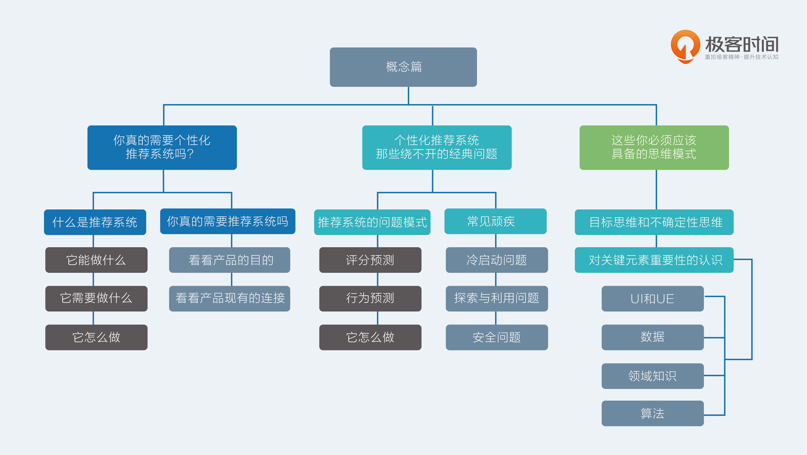

- 00 开篇词 用知识去对抗技术不平等.md.html
- 01 你真的需要个性化推荐系统吗_.md.html
- 02 个性化推荐系统有哪些绕不开的经典问题？.md.html
- 03 这些你必须应该具备的思维模式.md.html
- 04 画鬼容易画人难：用户画像的“能”和“不能”.md.html
- 05 从文本到用户画像有多远.md.html
- 06 超越标签的内容推荐系统.md.html
- 07 人以群分，你是什么人就看到什么世界.md.html
- 08 解密“看了又看”和“买了又买”.md.html
- 09 协同过滤中的相似度计算方法有哪些.md.html
- 10 那些在Netflix Prize中大放异彩的推荐算法.md.html
- 11 Facebook是怎么为十亿人互相推荐好友的.md.html
- 12 如果关注排序效果，那么这个模型可以帮到你.md.html
- 13 经典模型融合办法：线性模型和树模型的组合拳.md.html
- 14 一网打尽协同过滤、矩阵分解和线性模型.md.html
- 15 深度和宽度兼具的融合模型 Wide and Deep.md.html
- 16 简单却有效的Bandit算法.md.html
- 17 结合上下文信息的Bandit算法.md.html
- 18 如何将Bandit算法与协同过滤结合使用.md.html
- 19 深度学习在推荐系统中的应用有哪些_.md.html
- 20 用RNN构建个性化音乐播单.md.html
- 21 构建一个科学的排行榜体系.md.html
- 22 实用的加权采样算法.md.html
- 23 推荐候选池的去重策略.md.html
- 24 典型的信息流架构是什么样的.md.html
- 25 Netflix个性化推荐架构.md.html
- 26 总览推荐架构和搜索、广告的关系.md.html
- 27 巧妇难为无米之炊：数据采集关键要素.md.html
- 28 让你的推荐系统反应更快：实时推荐.md.html
- 29 让数据驱动落地，你需要一个实验平台.md.html
- 30 推荐系统服务化、存储选型及API设计.md.html
- 31 推荐系统的测试方法及常用指标介绍.md.html
- 32 道高一尺魔高一丈：推荐系统的攻防.md.html
- 33 和推荐系统有关的开源工具及框架介绍.md.html
- 34 推荐系统在互联网产品商业链条中的地位.md.html
- 35 说说信息流的前世今生.md.html
- 36 组建推荐团队及工程师的学习路径.md.html
- 加餐 推荐系统的参考阅读.md.html
- 结束语 遇“荐”之后，江湖再见.md.html
- 捐赠
03 这些你必须应该具备的思维模式
在开始讲解一些比较硬的知识之前，我先来给你洗洗脑，传达一些形而上、务虚但是重要的内容；所以，今天我主要带你认识两方面的内容：一个是重新认识推荐系统关键元素的重要性，另一个是要建立起两个思维模式。
这两个方面的内容如果理解不到位，尤其是当你去负责整个推荐产品的时候，那真是害苦了整个团队所有的兄弟姐妹。
对关键元素重要性的认识
要开发一个推荐系统产品，有这么四个关键的元素需要注意：
- UI和UE；
- 数据；
- 领域知识；
- 算法。
他们的重要性依次递减，权重大致是4-3-2-1，是不是知道真相的你眼泪掉下来。因为，推荐系统的效果不是你想买就能买，而是要正确认识不同阶段不同因素的重要性。
最先优化的一定是产品的 UI 和 UE ，即人机交互设计和用户体验设计。“颜值即正义”的法则放在推荐系统中也是成立的，不能因为你的产品是具有AI属性的个性化推荐就不看脸了，用户对产品的体验，视觉是否符合目标用户审美，交互逻辑是否简单明了，这些会在最大程度上决定用户是否会持续使用。
只有当用户不断回来，才有推荐系统的用武之地。个性化推荐产品首先还是一个产品，按照一款优秀产品的标准来要求它始终是正确的事情，所以请继续善待你们的UI和UE设计师们。
数据与UI、UE是几乎同等重要的元素，它是推荐系统的食材，巧妇难为无米之炊，多少算法工程师因为加入了一家没有历史数据积累的公司，那种“拔剑四顾心茫然”的无力感，谁去谁知道。
数据贯穿了产品始终，对数据的尊重就是对理性和科学的尊重。UI、UE、数据是一个产品的基石，不论其有没有推荐系统存在都是基石。
领域知识，与之对应的是常识和通识。可以这样说，没有哪个产品不涉及领域知识，每一个产品存在于市场上，总是有一部分价值是大多数其他产品无法替代的，这部分就涉及了领域知识。
电商产品有自己的领域知识，比如普通用户更在意的是价格而不是兴趣；音乐产品也有自己的领域知识。
比如一个歌手的死忠粉，你推荐给他该歌手的任意一首歌对他来说都是徒劳——因为他早就听过了。
至于新闻类产品，更是有自己的领域知识：新闻更新很快，可能上个月的内容都得从候选池中拿掉了。
类似这些在一个领域总结出来的普适规律，对于推荐系统的效果提升非常有用：有的是防止闹笑话自毁品牌形象，有的是大幅提高某些指标，有的是缩短模型训练周期。
我们对算法的爱是复杂的，大多数人最不了解的似乎就是算法，以至于本专栏会用最大的篇幅去讲解各种算法原理，但你一定要认识到，算法的左右没有你想象的那么大，但也一定不是可有可无。
一种对算法的常见误会就是：短期高估，长期低估。如果你不是算法工程师，比如产品经理或者运营人员，那么可能你要尤其注意，在一款个性化产品诞生之初，算法所起到的作用可以忽略，我们不能指望它能让产品起死回生、一飞冲天，但就此抛出“算法无用论”也是很愚蠢的。
这四个元素，都不是“天亮以后说分手”的那种，而是需要长期陪伴呵护，不断打磨。这里阐明其重要性的高低，是为了让你在资源有限，精力很少的前提下抓大放小。
目标思维和不确定性思维
四个元素的重要性认识清楚后，我再给你掏心掏肺地传达两个思维模式：目标思维和不确定性思维。
我个人对于软件产品有一个粗略分类。传统的软件是一个信息流通管道，从信息生产端到信息消费端的通道，比如一款内容App，写内容的可以正常记录，读内容的可以流畅加载，无论多大的并发量都扛得住，这就是一个正常的产品了。
但推荐系统这种产品，如果是一个产品的话，它和作为信息流通管道的本质不一样，它是一个信息过滤工具，要解决的问题不是信息流通本身，而是如何让流通更有效率。
这两个本质不同的软件产品，决定了我们要以不同视角去对待推荐系统。传统的软件产品追求的是稳定和满足预期，背后思想强调的是逻辑和因果链条，软件体验上设定好行为和响应，软件设计上强调分层以应对无比复杂的操作逻辑。
核心词可以表述为：逻辑、因果、分层。反观推荐系统这种信息过滤系统，追求的是指标的增长，背后思想强调是目标和不确定性：我们并不能很确定地模拟每个人将会看到什么，也不能很好地复现一些操作过程，充满了不确定性，但是在推荐系统未动的情形下，目标先行则是常识。
关于目标思维，如果了解机器学习的人会很好理解。通常来说，训练机器学习模型是一个不断最小化（或者最大化）目标函数的过程，先设定一个目标函数，然后通过不断迭代让这个函数值到最小值（或者最大值）。
我们把一个推荐系统也看做一个函数，这个函数的输入有很多：UI、UE、数据、领域知识、算法等等，输出则是我们关注的指标：留存率、新闻的阅读时间、电商的GMV、视频的VV等等。
这些指标就是函数值，我们做任何事情：加新的策略、替换现有的推荐算法、修改UI、甚至一些文案的调整，都是在改变这个函数的参数，是否有效就要看看函数的输出值，输出值在增长，说明修改就有效，就继续沿着那个方向修改，一旦无效或者起反作用就立即需要回滚。
目标思维背后是“量化一切”的价值取向。最先要量化的就是目标本身，整个团队才能知道在为什么而战，才能知道自己所做的动作是不是有意义，才能让团队自发地去寻找优化方向，一定不能停留在“感觉推荐很精准”或者“感觉推荐得很不准”这样的玄学层面。
接下来要量化的是所有的优化改进动作，知道 Logo 放置位置往上移动了多少，知道文案字数减少了多少，知道 Push 少发了几次，发给了谁，谁点进来了。量化一切的价值取向和前面说的数据的重要性是一体两面，要量化就要收集数据，数据收集对了才能得到正确的量化结果。
盯着量化后的目标去行动后，还需要你具备另一个思维：不确定性思维。这个思维是开发传统软件类产品后较难转变形成的。
什么是确定性思维？举个例子说，原来的产品我们能知道某个人的界面上看到的是什么，因为它是完全依靠逻辑和因果链条引发而成的，只要初始条件给定，那么结果就是一定的，也因此在出现 Bug 时可以很容易复现，这是确定性思维，就是对于结果有预期，可以提前推演出来。
反之，不确定性思维就是：不用因果逻辑严丝合缝地提前推演，而是用概率的眼光去看结果。
比如说，出现了一个不是很合适的推荐，通常老板们会立即责问：“为什么出现这个”，这就是确定性思维在作祟，如果是不确定性思维，就会问：“出现这个的可能性有多大”。
为什么负责推荐系统产品的人一定要有不确定性思维呢？原因有以下几个。
- 绝大多数推荐算法都是概率算法，因此本身就无法保证得到确切结果，只是概率上得到好的效果；
- 推荐系统追求的是目标的增长，而不是一城一池的得失；
- 如果去花时间为了一个Case而增加补丁，那么付出的成本和得到的收益将大打折扣；
- 本身出现意外的推荐也是有益的，可以探索用户的新兴趣，这属于推荐系统的一个经典问题：EE问题，我也会在后面的内容中专门讲。
总结
今天，我主要说了两个内容：
- 推荐系统构成元素的相对重要性，搞清楚重点，才能快速前进；
- 建立起目标思维和不确定性思维，抓住目标，不择手段地增长目标，不纠结一城一池的得失。
这两个事情虽然有点务虚，但的确是我所经历过的团队教给我最重要的事，有的是教训，有的是经验。现在，你能说说你对目标不确定性的理解吗？你们在现在的工作中哪些工作属于确定性思维？ 你可以给我留言，我们一起讨论。

© 2019 - 2023 Liangliang Lee. Powered by gin and hexo-theme-book.